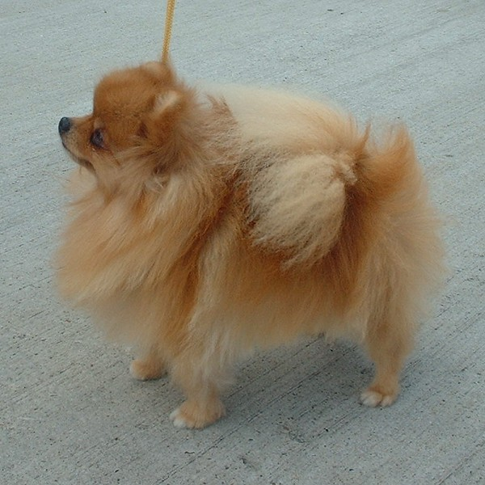

포메라니안(Pomeranian)은 중앙유럽(오늘날 독일 북동부, 폴란드 북서부)에 있는 포메라니아 지역에서 유래된 스피츠 종류의 애완견이다. 작은 크기때문에 애완용 작은 개로 분류되는데, 포메라니안은 대형 스피츠종 개인 독일 스피츠에서 유래되었다. 이 때문에 국제애견협회에서도 포메라니안을 독일 스피츠의 일종으로 구분했고, 많은 나라에서 즈베르크스피츠(작은 스피츠라는 뜻)로 알려져 있다. 또는 폼(Pom), 폼폼(Pom Pom)이라는 이름으로도 불린다.
